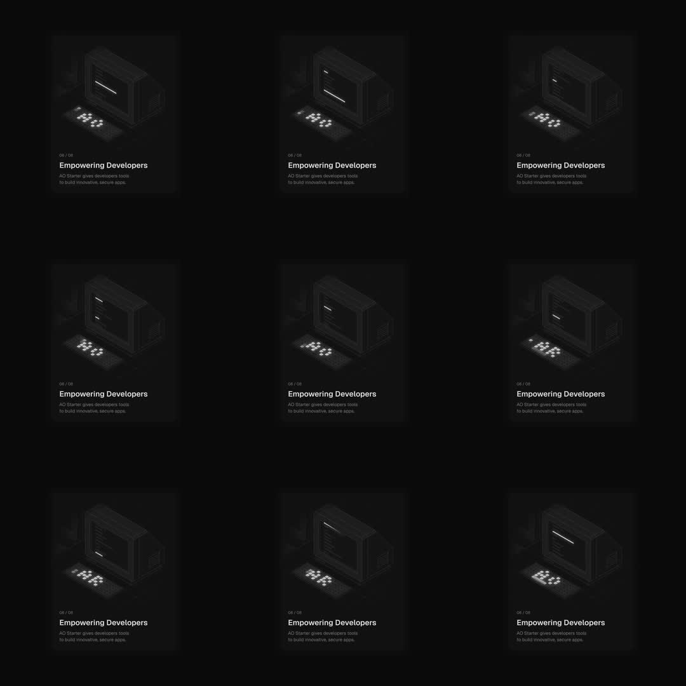

Retro CRT: a dark feature card ('06/08 Empowering Developers - AO Starter gives developers tools to build innovative, secure apps.') carrying a dim isometric illustration of a retro CRT computer; the CRT comes alive in loops - its screen types terminal prompts, shows a loading bar sweeping, and the chunky keyboard keys glow amber one cluster at a time while the bezel stays in shadow.
Media
Frame-by-frame

0-25%
CRT screen shows a blinking caret / prompt line; keyboard's left key cluster lit amber; rest of scene deep shadow.
25-50%
Screen renders text lines (boot output); a horizontal scanline/loading bar sweeps the screen; key lights shift clusters.
50-75%
Screen shows a filled loading bar (progress); keyboard center cluster glowing; faint screen glow spills onto the desk.
75-100%
Screen cycles back to a single diagonal line/prompt; keys dim; loop restarts.
Build prompt
Rebuild this interaction 1:1: a retro CRT feature card - a dark card ("06/08 Empowering Developers - AO Starter gives developers tools to build innovative, secure apps.") carrying a dim isometric illustration of a retro CRT computer that comes alive in loops: the screen types terminal prompts, shows a loading bar sweeping, and the chunky keyboard keys glow amber one cluster at a time while the bezel stays in shadow.
## Integration
Integration: stack-agnostic spec - springs given as stiffness/damping, timed motions as duration + curve, canvas/shader notes are perf guidance only; map every value to your framework and animation library of choice.
## Scene
Dark card with copy block. The CRT: dim isometric render, deep shadows; screen area and keyboard clusters are separate layers that light up. Faint screen glow spills onto the desk.
## Motion spec
Pattern: ambient ~4s loop.
- Screen: blinking caret/prompt (steps blink), then boot text lines typing on, then a horizontal scanline/loading bar sweeping the screen (1.5s linear), then a filled progress bar; cycles back to a single prompt line.
- Keyboard: key clusters (left, then center) glow amber one at a time, shifting as the screen content changes; keys dim between clusters.
- Glow: the screen's light spills faintly onto the desk while content is bright.
- Card copy: static.
## Calibration
- Typing in steps() at terminal cadence (~12 chars/s); smooth typing reads as a subtitle.
- Bar sweep 1.5s linear; the loop total ~4s with a beat of darkness between cycles.
- Amber is the only light color; screen content stays monochrome green/white.
## Reduced motion
CRT holds the boot-text frame with one key cluster lit.
## Don't miss
- The bezel and casing stay in shadow at all times - only screen and keys emit light.
- Key clusters light in sequence (left -> center), never all at once.
- The desk glow spill is tied to screen brightness - it fades when the screen dims.